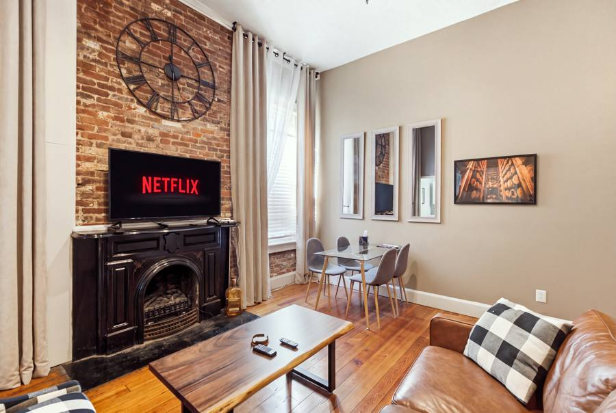

Home / The Bourbon Trail / Historic Loft
ST. CLAIR STREET · FRANKFORT
Home / The Bourbon Trail / Historic Loft
ST. CLAIR STREET · FRANKFORT
A freshly remodeled loft for two with a king bed, brick walls and a dedicated parking space, right in Frankfort's entertainment district. Park once and walk to dinner, bars and the river.
St. Clair Street, Frankfort's entertainment district
For your privacy and ours, the exact address and arrival directions are sent after you book.
Self check-in. You get the building entry code and a personal code for the loft door before arrival.
Don't worry about stripping beds or doing dishes. Just turn off the lights and TVs, log out of streaming accounts and lock the door. Checkout is 10:00 am.
Yes. You get one free, signed parking space behind the building off Catfish Alley, and it fits a full-size truck.
Couples. It sleeps 2 with a king bed, right in the middle of downtown Frankfort.
No pets, please.
Cancel at least 30 days before check-in for a full refund. Cancel 7 to 30 days before check-in and 50% of the nightly total is refunded. Cancellations less than 7 days before check-in are non-refundable.
“We had a great stay! The loft was freshly remodeled, clean, and comfortable. Its central location made it the perfect home base for exploring multiple bourbon distilleries. There were also plenty of great restaurants and bars nearby, many featuring live music.”
“Great stay in Frankfort. Super clean and exactly as pictured. Comfy king sized bed. Will definitely look to stay here again when visiting this area. Bars and restaurants right out the front door. Close to many distilleries.”
MORE IN THE BOURBON TRAIL
 The Bourbon Trail
The Bourbon TrailDowntown Frankfort
1904 mansion · speakeasy · theater · sleeps 14
View home → The Bourbon Trail
The Bourbon TrailVersailles
1903 home · covered patio · sleeps 8
View home →
The Bourbon TrailSt. Clair Street · Frankfort
2-story loft · sleeps 4
View home →BOOK DIRECT PERK
Book on our site and get a complimentary early check-in or late checkout, up to 2 hours, when available. Same homes, same hosts, always a lower price than Airbnb or Vrbo.